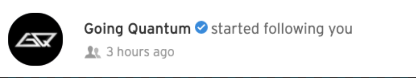

山本朋義
みんなに「とも」と呼ばれてます。ポートフォリオ作りは初めてです、、。雑ですみません、、。
ウェブ開発
CSSも問題なくできますが（このポートフォリオでは説得力ゼロですが）、JavaScriptについてはかなり自信があります（？）。自主課題ではJavaScriptを用いて強化学習で動く、AI金魚を作りました：
パソコン音楽
asuzoraという名義で去年から活動しています。作風はこれからの話ですが、
Colour BassとFuture Houseを組み合わせた感じをメインにしてます。DAWはLogicです。
つい先月あたり（？）にMonstercatのでもフィードバック配信で曲 （以下：asuzora & Tsuyoshi A. - ID、ボーカルは作業中なのでのぞいています）を気に入ってもらい、A&Rのリードとコネができました。
つい先月あたり（？）にMonstercatのでもフィードバック配信で曲 （以下：asuzora & Tsuyoshi A. - ID、ボーカルは作業中なのでのぞいています）を気に入ってもらい、

NCSのアーティストとも多数コネあります。
Jonas Wang君とは特に仲良いです。
他には、ZEOL、Inverted Silence、Tsuyoshi A.、Skybreakなどのmelodic bass界隈中心にEDM界隈幅広く活動し初めてます 。
まだ技術は初心者レベルのほうに近いですが、よろしくお願いします。
Jonas Wang君とは特に仲良いです。
他には、ZEOL、Inverted Silence、Tsuyoshi A.、Skybreakなどのmelodic bass界隈中心にEDM界隈幅広く活動し初めてます 。
まだ技術は初心者レベルのほうに近いですが、よろしくお願いします。

sense.では音楽をメインにして活動していきたいです。DJ・マッシュアップ経験もあるので、よろしくお願いします。
あまり最近、自分の曲に満足することは少ないですが、これらは誇れる作品です。
あまり最近、自分の曲に満足することは少ないですが、これらは誇れる作品です。
マッシュアップ（DJしたときに流した時のやつです。音質ちょっと悪いです）: